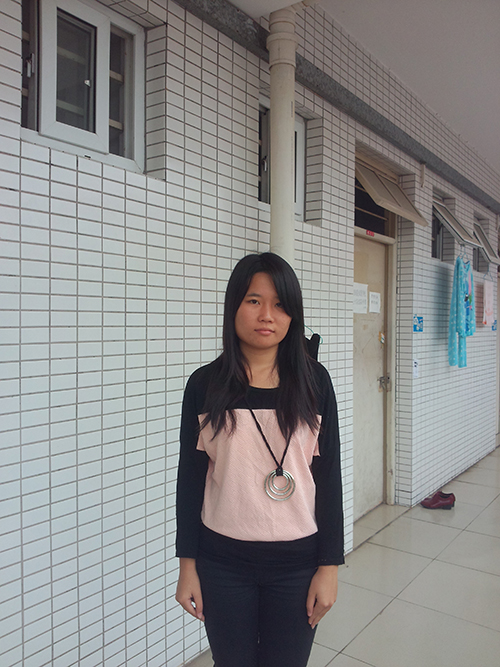

当前位置：首页 > 学习成果 > 林泽习
《骏怡汇》之工作总结
时间如弹指间，寒假已过。回想起过去辛苦的寒假，却又给我留下美好的回忆。说起美好的回忆，那边是我在骏怡汇美容店的工作中，学到了很多我以前没有接触过的汽车养护知识。
我在《骏怡汇》那边做过精致洗车，打蜡，内饰清洗，汽车专用品物品有条有理的摆放，装座椅的座套。看过《骏怡汇》那边的工作人员进行汽车大维修，还有贴膜师傅对汽车灯以及车窗的贴膜和镀膜，抛光，还有更换机油和雨刮器等。在我看到和做过的过程中，我学会了以下：
在我做过的事情中，精致洗车过程应该重点要注意——喷玩泡沫后用抹布擦洗时应把转角及车轮后面的挡泥板擦到位干净，如果车身有比较多灰尘与泥沙时应用细粉粘到抹布上对汽车进行擦洗；对汽车内饰进行擦洗时应着重把仪表台以及前挡风车窗擦得特别干净，如果还有一些仪器按钮及空调出风口擦不到时应用风枪吹干净再抹；吹水过后一般后视镜，车牌和开车门把柄会有水没有吹干，所以吹水时重把后视镜，车牌和开车门把柄吹多次及至吹干；在交车前的检查应该重点明显和平时注意不到的地方。打蜡过程——磨泥要好（重前后盖）；打蜡转圈不要过大或小内饰清洗注意擦到位和干净，最主要是要拿开车主的物品才能洗的方位切记要按照原位放回；座套安装主要是钩该钩那就钩那就好，后座要拆座椅才能装的不要硬拔注意看开关按钮就好。对于看过的工作，我只有一定的了解，可以这样说只能知道大概是怎么做的。想想这个寒假虽艰辛，但总体说还是蛮好的。
